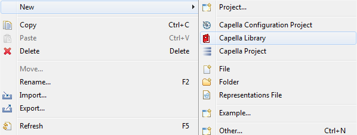
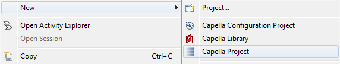

Create a library

In the Logical Architecture, create some elements and create a REC from them.

Alternatively, select “REC/RPL->Create REC->With whole library contents...” from the project explorer context menu to automatically add all library elements to the REC.
The dialog displays the content of the REC.

Notice the message at the end of the dialog : Functional Exchange is associated to some Exchange Items defined in the library:

After creation, the REC is available In the library.

Ensure your library is saved.
Create a new Capella Project and add reference to this library



In a Logical Architecture Blank diagram, instantiate a new RPL

In the dialog, select the REC located in the referenced library:


Display all elements of the RPL in the diagram

FE1 from the RPL is linked to Exchange Items located in the library.